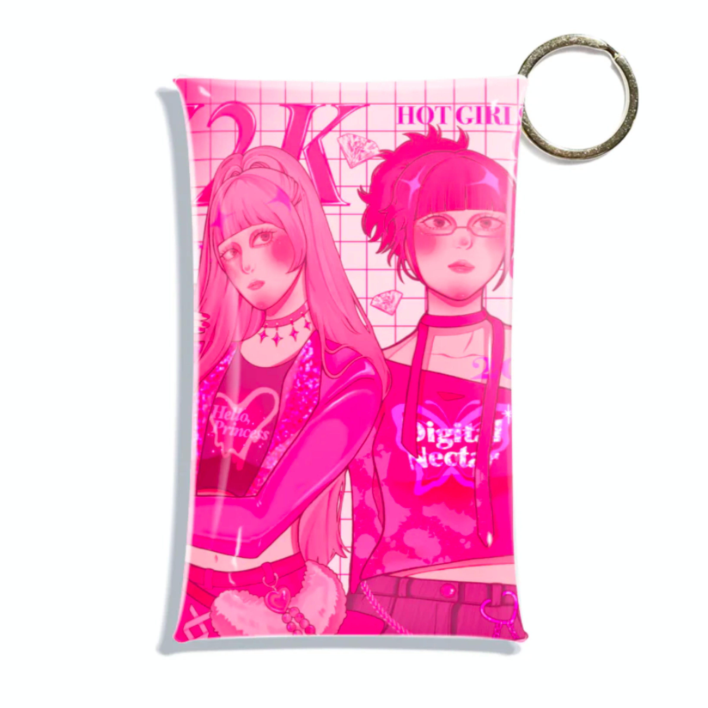
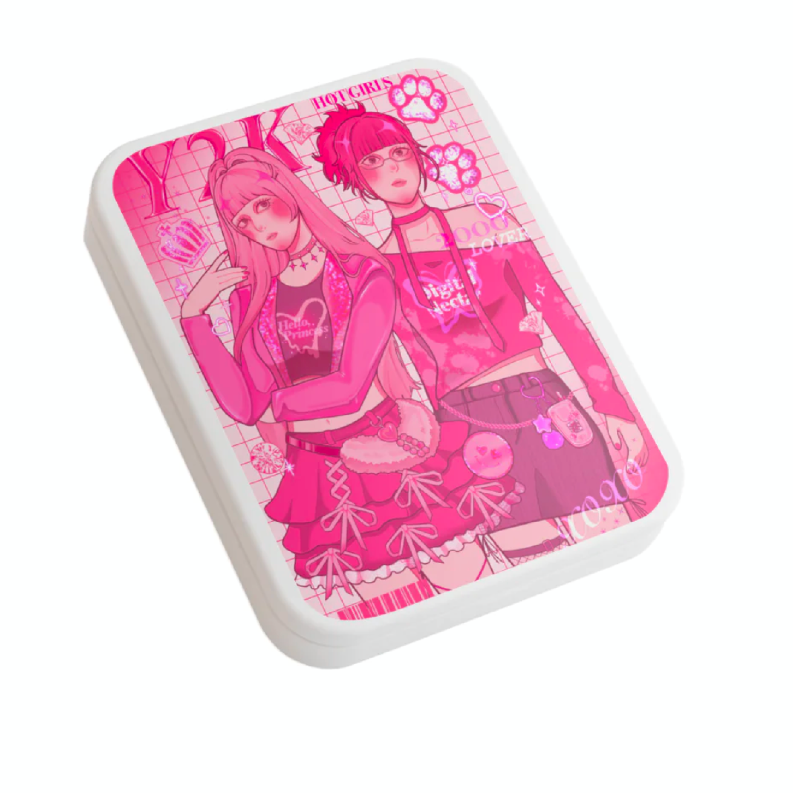
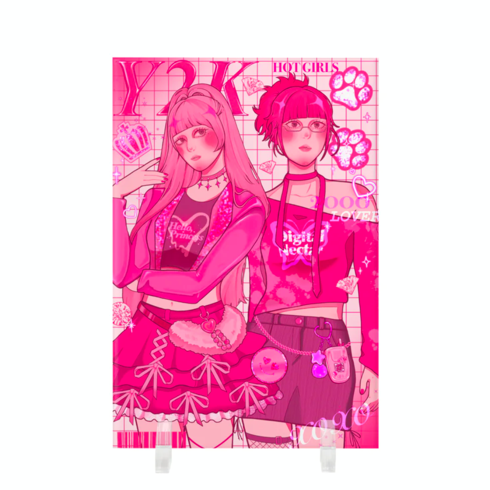

Y2K｜Re:2000s Style
Y2Kは、平成時代に流行したY2Kファッションをテーマに制作したイラストレーション作品です。 平成らしさを感じるピンクを基調に、当時のファッションや雰囲気を取り入れながら、 現在再び注目されているY2Kファッションの要素を融合したビジュアルを制作しました。 また、グッズ展開では平成レトロを感じられるアイテムとして、当時流行したデザイン性のある缶ケースやマルチケースなどを制作し、 作品の世界観を日常の中でも楽しめるよう展開しました。
Role
- Illustration
- Goods Design
Tools
- Procreate
Period
- 2025.10 – 2025.11
Category
- Illustration
- Character Design
01
Multi Case

02
Flat Tin Case

03
Acrylic Panel
